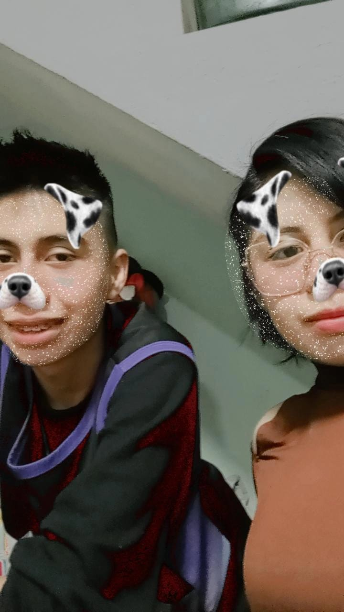
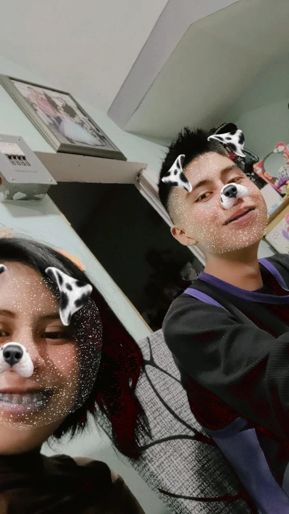
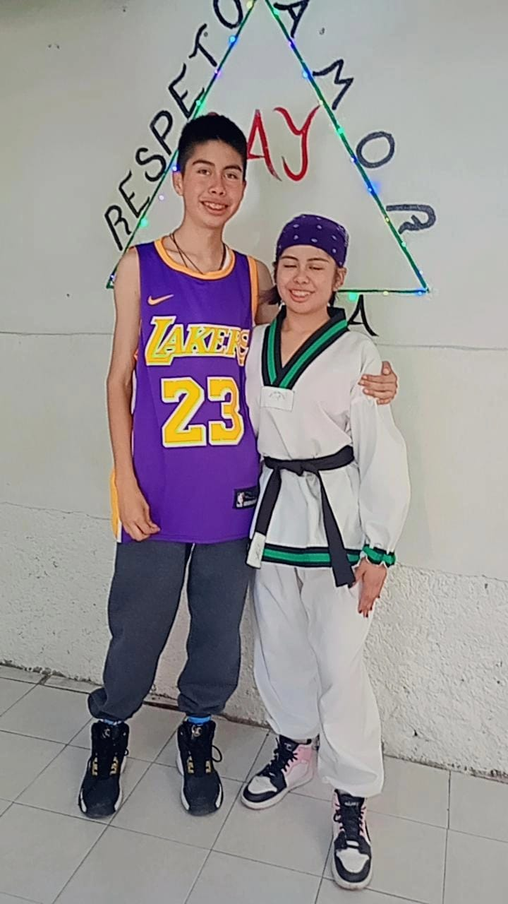
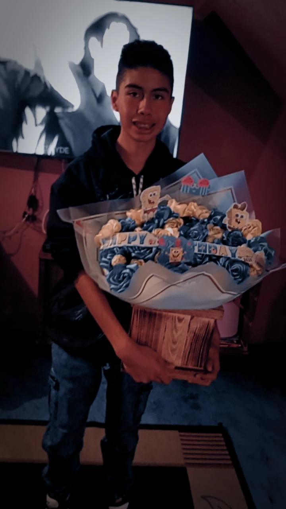

Mi hermano:
Él es mi hermano, mi mejor compañía, mi apoyo incondicional.
Siempre está ahí para escucharme, para hacerme reír incluso
en los días más difíciles. Me consiente con pequeños gestos que
demuestran su cariño, y en los momentos de tristeza o incertidumbre,
nos apoyamos mutuamente sin necesidad de decir mucho. Es esa presencia
constante que da paz, fuerza y confianza. Tenerlo en mi vida es un regalo invaluable.



